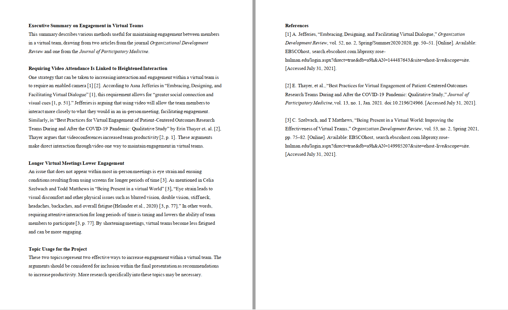
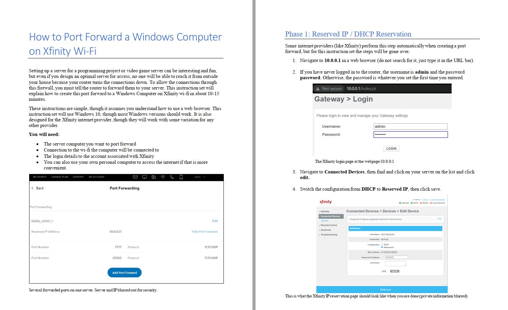
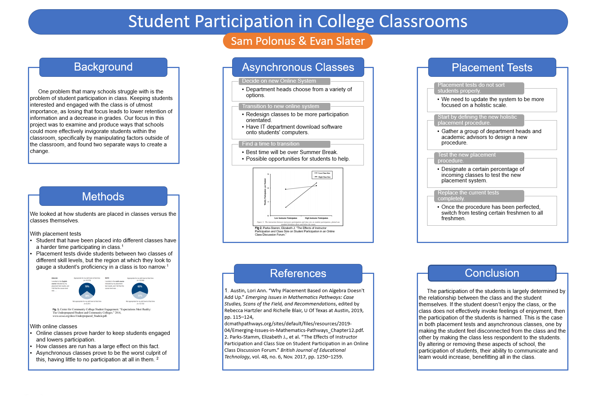
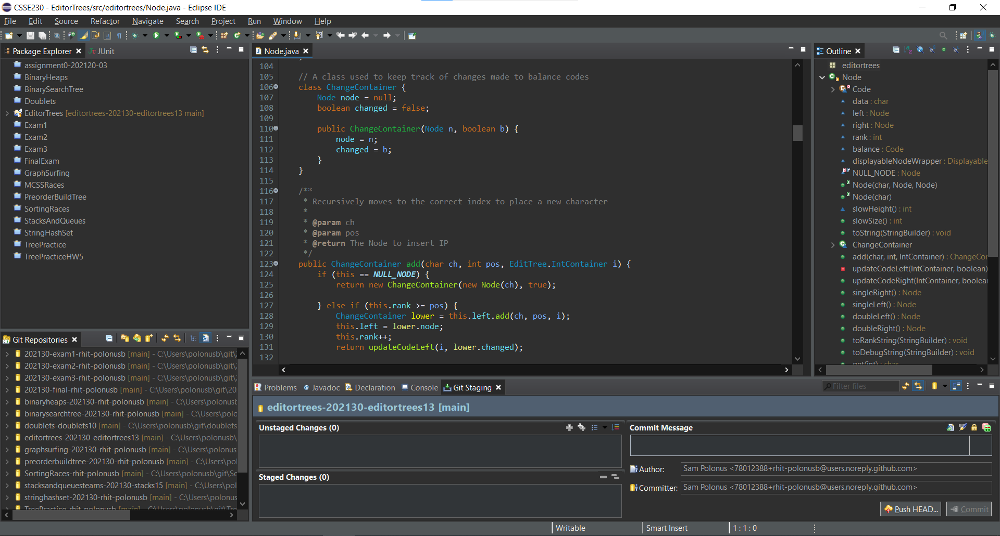

Portfolio
-
Executive Summary, created 8/1/2021
This executive summary was a document created during the research phase of a group research project for a class on technical communication. The goal of the project, which was created with fellow technical communication students Trevor Fagin and Khyree Brooks was to give a presentation on the problems surrounding virtual teams, as well as various strategies to alleviate them. My part in this presentation centered on gathering research concerning engagement of team members during a virtual meeting. This involved researching various found issues pertaining to team engagement, then identifying key related points within all the articles as arguments to be made in the final presentation. This information was collated as the provided executive summary, which also includes a note to the rest of the group, recommending future research. In my future career, being able to develop an executive summary allows for quick understanding of the points of interest in the research I have done without reading the full articles and allows the points to be more quickly analyzed. That, combined with the final note on future research sets up my ability to generate an effective executive summary as critical for communication among team members in the research phase of a project.
-
Instruction Set, created 7/10/2021
This is an instruction set created for a class on technical communication. The goal of the instruction set project was to choose a topic that was well-understood by me and explain it clearly and efficiently through multiple steps. As I have experience with managing a server computer, my specific instruction set outlines steps to port forward an IP from a Windows computer using Wi-Fi from Xfinity, an important final step in making a server live. This process is well-known to me, as I have had to port forward multiple servers from different internet service providers and understand how difficult it can be to port forward something for the first time. This understanding can be seen in the instruction set through the focus placed on initially finding and logging into Xfinity’s router page, as well as the comments made on page 1 concerning compatibility with other internet providers. As my career creates tools that are used by many and understood by few, this ability to spell out instructions for using these tools is important for me to have, as it makes it easier to explain more complex technical processes with those who might not understand them as well as I do.
-
Research Proposal Poster, created 11/12/2020
This poster was a collaborative project with the topic of student participation, or lack thereof, in classrooms at Rose-Hulman with fellow Freshman Evan Slater. The project was a continuation of an individual research project about problems found around Rose-Hulman as well as acceptable solutions, which were then combined with another student’s research into a presentable poster. My part was to research the effects of course placement tests and how they affected engagement within the classroom, as well as solutions to reverse the problem. I developed a paper of my research, which argued against the current standard of placement tests as they stand. A main point of this poster was to take the research paper both of us had developed and merge the two ideas while also making it more readable directly from a poster. This involved identifying and isolating key points and solutions from the main papers and placing them into an arrangement that allowed for comprehension with the least effort necessary. In my career, the creation of this presentable material that outlines research done and solutions suggested in a concise way is incredibly important, as it helps sell potential products to an audience in order to receive funding or permission.
-
Genetic Algorithm Project Presentation, created 2/19/2021

This presentation was created as a part of the culmination of the final group project in our object-oriented programming class, used to demonstrate the functionality and design of the final product. The team consisted of myself and two other Freshmen, Julian Fiorito and Yingeng Liu. We were tasked with producing a simulation of natural selection based on various models for choosing those who would reproduce, methods of gene mixing and mutation as well as a user interface to change these various aspects of the algorithm. My main role in the project was to develop the core algorithm, as well as the ability for multiple algorithms to be used based on the user’s selection. I also managed the recording and editing of the presentation and recorded a segment of the presentation myself. In my part of the presentation, I describe specifically the functions of the various classes by using the UML diagram created to organize our project workspace and maintain efficiency within the program. As part of my career will be to display what my team has worked on to technical groups interested in using my product, knowledge of how to describe a complex system and effectively demonstrate its capabilities is a crucial skill.
-
EditorTree Class Project, created 4/12/2021
This is a screenshot of a portion of code written as part of a programming project for a class on data structures and analysis (The full package can be downloaded by clicking on the image). The goal of the project was to design a class for producing an editable line of text using a height-balanced binary tree as character storage and to replace or add characters as efficiently as possible. Some basic structure, such as specific class and method definitions were provided, and a tree display written by a previous student was included in the project but otherwise all code was written by me for the project. One highlight of this program is in Node.java, which was more or less built be me is the consistent use of documentation and commenting to document the work being done in the project. This was an individual project, but when working in groups, documentation allows for efficient communication between members when adding new features or debugging problems. As software engineering work can be done from mostly anywhere, it is likely that I will be working with people who live nowhere near me, and so clear and efficient communication though the usage of documentation is invaluable.